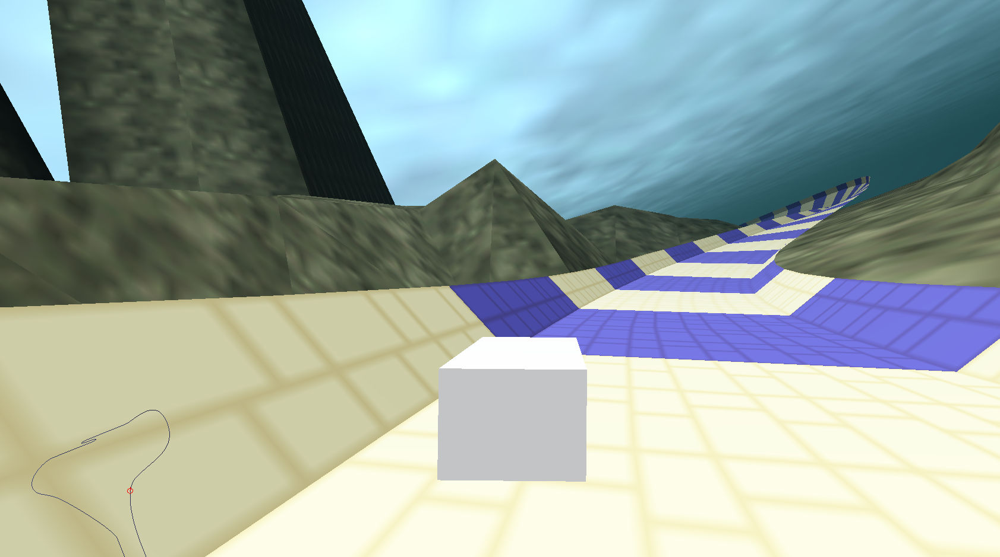
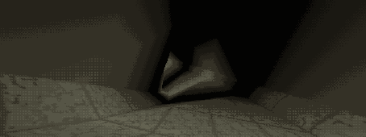
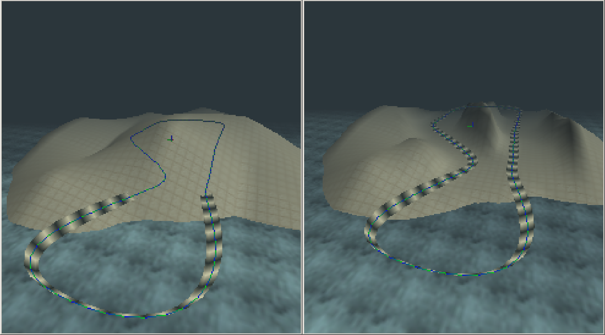
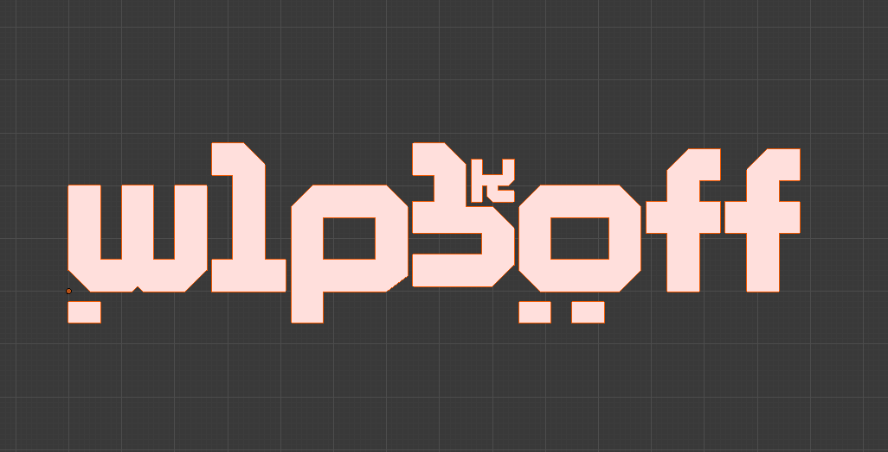
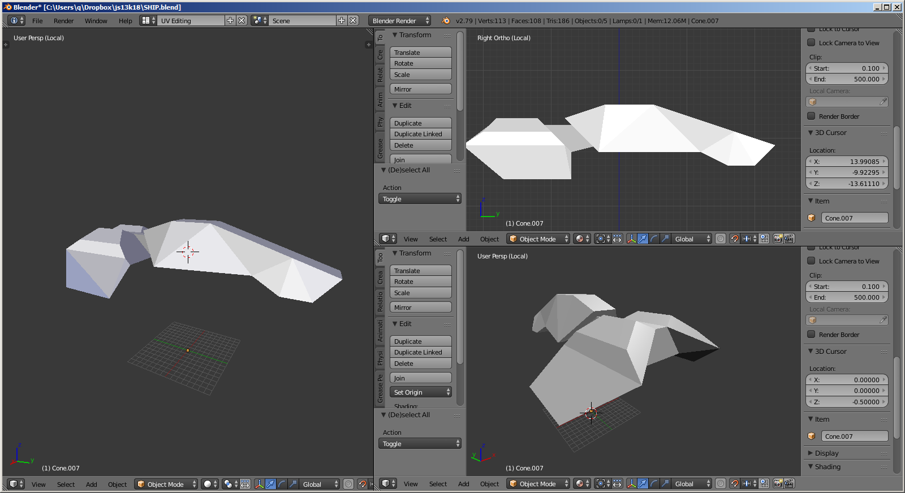

|
|
JS13K is a month-long annual programming challenge. The goal is to create a game using no more than 13K of compressed code and data, no external libraries or frameworks allowed.
In 2018, I tried to make an anti-gravity racing game inspired by WipeOut!
You can play it right here, but before you do: I should warn you that it's not exactly finished.
| R | Resets the vehicle back on track if (when) you wipe out |
| Z | Accelerate |
| X | Zoom |
| C | Cycle camera mode |
| Arrow keys | Yaw and pitch |
WebGL makes the graphics happen. To stay below the 13K limitaiton, nearly all of the geometry is generated.
The racetrack itself is a tiny road-mesh that is repeated and made to follow a set of points using cubic interpolation. The final zip file weighs in at 12786 bytes.
The terrain is just a simple heightmap, generated using interpolated layers of noise. The heightmap is then carved down by the track, if below the height value at the location of each segment. Finally, a WebGL-buffer of triangles is created using the height information.
There's also some basic (wonky) rigid body physics going on for the vehicle. Collision is very fast as the game keeps track of what segment the vehicle is on, only the current and the next segment needs to be tested, so IIRC only about 6 triangles. These track-triangles also put a magnetic hover force on the vehicle that works upside down (if you've played the game; you can make the spiral if you're careful.
Collision against the terrain is also very fast as the height of any location can be found by 3-Point Sampling the heightmap.
Following is a series of images and gifs I snapped duringthe development.
How the game looked before game physics were implemented.

The "skybox" in the game is created using ray-plane intersection, and sampling from a seamless noise texture. All done in a shader.

Originally I wanted a sea with geometric waves, around the track, but I didn't have time to make it appear seamless as the vehicle rushed past it. I also needed to save space. It had to go.
Carving away blocking terrain.
Game logo that never made it into the game.
Ship model that never made it into the game.
It's a combat flight game. Terrain as well as textures generated with a simple layered noise-map. The plane was made in Blender.
This was my introduction to JS13K. It was also the first time I wrote a software rasterizer (drawing to a array buffer and then copying to a html5 canvas). I sure learned a lot about JavaScript in the process. The rasterizer was kind of slow and had very odd fill-rules, but it was perspective correct and used bilinear filtering. I used interlacing in an attempt to speed things up to get somewhat playable framerates.

Unfortunately I have lost the source files for this project. They may still exist on a thumbstick somewhere.